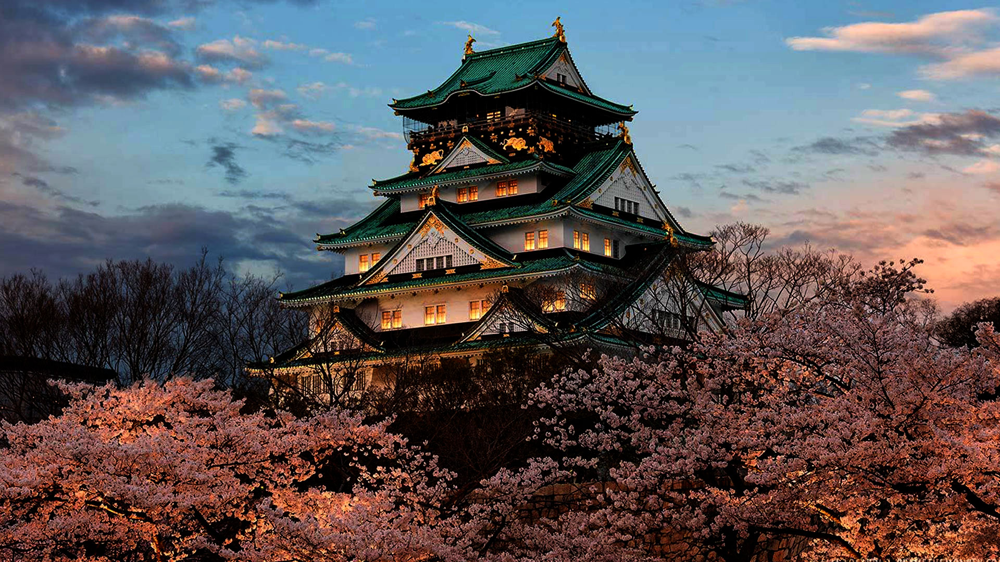
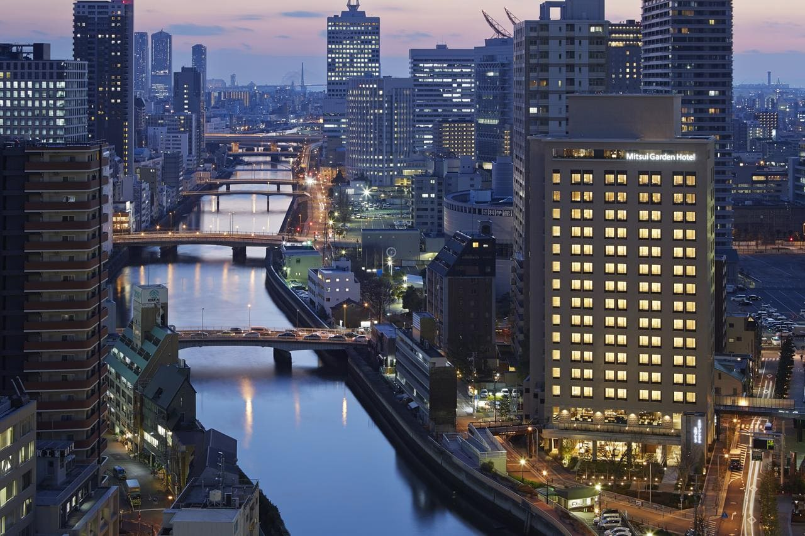
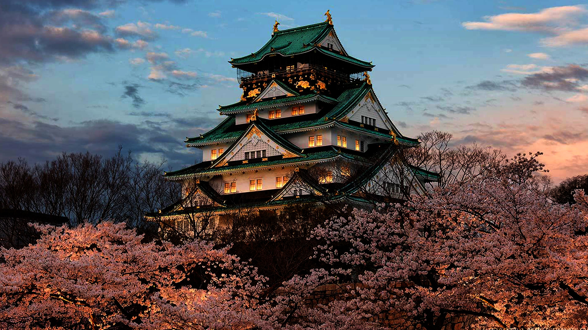
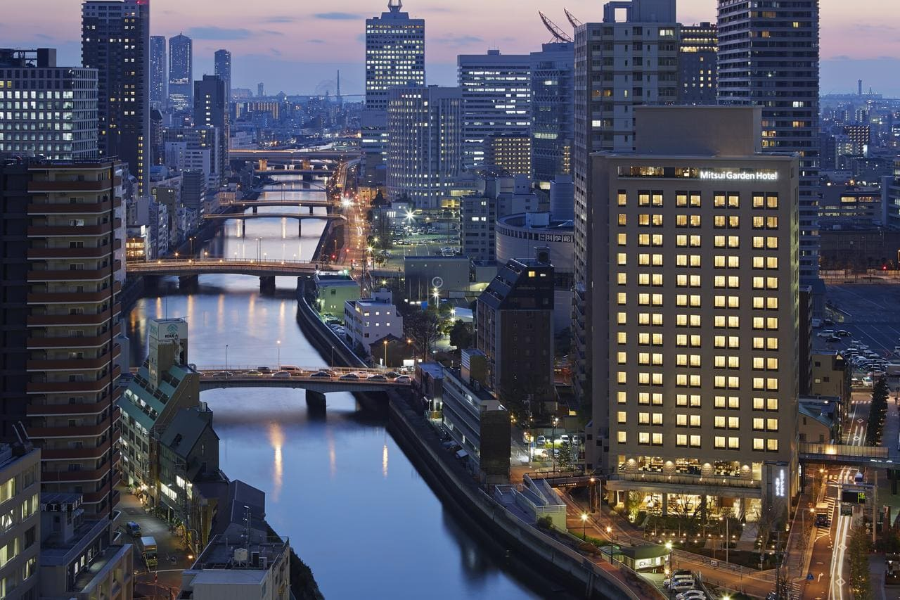

Osaka may be a selected town within the Kansai region of Honshu in Japan. It's the capital and also the most thickly settled town in Osaka Prefecture, and also the third most thickly settled town in Japan, following Tokio and urban center. With a population of two.7 million within the 2020 census, it's additionally the most important element of the
Keihanshin Metropolitan space, the second-largest metropolitan space in Japan and also the tenth-largest populated area within the world with quite nineteen million inhabitants. Osaka was historically thought-about Japan's economic hub. By the Kofun amount (300–538) it had developed into a vital regional port, and within the seventh and eighth centuries, it served concisely because the imperial capital. Osaka continued to flourish throughout the Edo amount (1603–1867) and have become called a middle of Japanese culture. Following the Meiji Restoration, Osaka greatly swollen in size and underwent fast industry. In 1889, Osaka was formally established as a municipality.
The city's side is hospitable bay, and is otherwise fully enclosed by quite 10 satellite cities, all of them in Osaka Prefecture, with one exception: town of Amagasaki, happiness to Hyōgo Prefecture, within the northwest. Town|the town occupies a bigger space (about 13%) than the other city or village inside Osaka Prefecture. Once town was established in 1889, it occupied roughly the realm known nowadays because the Chuo and Nishi wards, only 15.27 sq. kilometres (3,773 acres) that might eventually grow into today's 222.30 sq. kilometres (54,932 acres) via progressive expansions, the most important of that being one 126.01-square-kilometre (31,138-acre) enlargement in 1925.